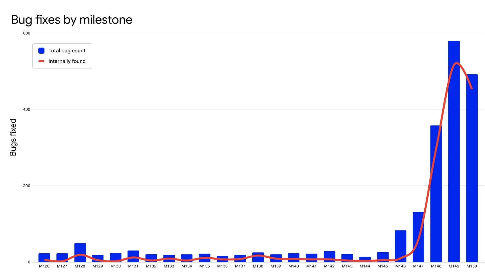

Once vulnerabilities are found, those vulnerabilities need to be fixed.
Finding vulnerabilities is useless for a defender unless those vulnerabilities are fixed. If vulnerabilities are not fixed efficiently, it can become completely overwhelming. For example, here is the number of bug fixes in the Chrome browser, showing a huge rise in 2026 (compared to 2024-2025) caused by AI-discovered defect reports [Chrome2026]:

Firefox had a similar experience. Mozilla reported, “We fixed a total of 423 security bugs in releases in April. In addition to the 271 bugs announced two weeks ago, there were 41 externally reported bugs, with the remaining 111 discovered internally” [Grinstead2026-05].
In many ways, a web browser is a worst case, since it has a massive amount of functionality and must directly interact with potentially malicious websites. Still, this experience demonstrates that AI can identify many vulnerabilities not found otherwise, and that you need to be ready to fix far more vulnerabilities than before.
If you are sending reports to an external organization, particularly an open source software project, you may be required to propose a fix.
Historically, if a finder was examining external software, they would often simply report a vulnerability to that external project and let the project fix it. However, in the new world of AI, simply reporting a vulnerability is often not very helpful; many projects are inundated. If an AI was used to find a potential vulnerability, many recipients will expect both a PoC (showing it’s a vulnerability) and a specific proposed fix that would fix it.
As reported in [TrailofBits2026-06], “Anyone can file an issue, flex, and walk away. We showed up with the patches… [and go] beyond just fixing bugs: we’re adding new tests and fuzzing harnesses, CI security scanning, supply-chain tooling, correctness fixes, and features maintainers had been meaning to get to.” In short, providing a proposed fix is more likely to be helpful than showing up with only a complaint.
A fix will only be developed if someone is assigned, tacitly or explicitly, to do so.
In small projects, with few developers or fixes to be done, this assignment is often obvious. In a larger project, even the assignment process can be overwhelming.
Thus, in a larger project, consider using automatic assignment to handle the tsunami of reports. If a system can automatically route the issue to the correct component and human owner, this can be a huge help [Chrome2026]. This doesn’t need to be complex; an AI system can often estimate this. If the assignment is in error, or the human is overwhelmed, have a process for transferring it.
Before creating a fix, be sure to create a test and confirm the root problem.
“Write a new test that fails with the existing code. Then, implement the fix and confirm the same test now passes without breaking anything else. (Yes, it’s test-driven development). If you don’t add a test, the fix can silently regress and it can be hard to retroactively prove the bug was real.” [Yan2026] After all, this mistake has happened before; a focused test will increase the likelihood that this specific problem won’t recur.
In addition, examine the system to find the root cause. “Models may narrowly address findings at a specific call site instead of the root cause. Simply prompting the model to identify and fix the root cause can be effective. Then, have the model look for variants at two levels: (1) same pattern, where there are other call sites or copies of the same buggy code elsewhere, and (2) same class, where a codebase with one SQL injection vulnerability tends to have more SQL injection vulnerabilities. Update the threat model with the validated findings and patches to close the loop.” [Yan2026]
Now you’re ready to create a fix. You might choose to use AI to help develop a candidate fix, but you do not need to use the same AI that found the vulnerability. Many people find vulnerabilities using a model that’s expensive, slow, or restricted. It might be better to use a different AI system to create the fixes, since it might not have the same issues, it can use the detailed information provided earlier, and it might be better at that task.
There’s a tradeoff here. The Linux kernel’s procedure notes that “fixes written in the same session as used to find the bug will generally lead to better and more accurate fixes as the LLM’s reasoning context remains present” [Linux-AI]. On the other hand, that context may include the finder’s incorrect guesses, as discussed next. Either way, give the fixing AI the verified evidence, and verify the result.
Only provide verified correct information to the AI, especially if the AI process is fully automated.
The phrase “garbage in, garbage out” applies to AI systems, and is especially true if you are trying to use AI to create fixes for vulnerabilities. Be careful to only provide correct details. Avoid including data that might be incorrect in such prompting. In particular, try to pass along the details that validation confirmed (such as the reproducing input), not the finder’s unverified explanation of the cause or how to fix it.
One study found that “giving incorrect guidance to the model in its initial prompt [to create a vulnerability fix] resulted in a roughly 50 percentage point reduction in fix correctness rates [while] giving more correct details to the model increased correctness by only 15 percentage
points compared to no specific guidance at all. As such, in cases where one cannot be highly
confident in the accuracy of bug details or fix guidance passed to an LLM for patch generation
(e.g., when that data is sourced directly from other automated tooling), the safer bet may
actually be to omit lower-confidence information that could cause a ‘correctness collapse’ if it
turns out to be wrong.” [Mierczuk2026]
When working with an AI to develop a vulnerability fix, some general guidelines will increase the likelihood of success.
As much as possible, be clear in the prompt to create a fix. Here are some general prompt statements you may find helpful: “Identify the root causes of this vulnerability. Identify approaches for fixing the root causes of the vulnerability, not just this specific example, so it is no longer a vulnerability. Discuss options for fixing it, along with pros and cons. Remember that the goal is to ensure an attacker cannot exploit the vulnerability along any path, not simply some paths. When generating code, try to reuse existing code, minimize new code, and, where practical, work within the existing system. Ensure the resulting change is easy to review. Ensure that existing functionality is maintained where practical and that you do not insert any new vulnerabilities. Update corresponding documentation. Use tools to obtain and validate information. The result must pass all CI/CD tests.”
When using an AI to fix defects, enable it to “interrogate, validate, and raise disagreements about the information stated to them in their initial task prompts.” [Mierczuk2026] AI is much less likely to succeed if it contains incorrect information or is missing key information, so it’s important to equip it with tools that increase its likelihood of success.
It’s vital to work with the AI to identify the true underlying cause and fix that while not breaking functionality. Another study found that the most common failure when creating fixes was that the AI often guarded the symptom with incomplete local checks. AI systems often fail to localize the vulnerability causing malformed behavior, or to silence the crash by deleting the offending operation or even the entire functionality. In some cases, the AI will add broader conditions that reject invalid input but also benign inputs, causing functional breaks [Shen2026-09].
The Chrome team’s process is instructive: “We run a fixing agent that returns multiple candidate fixes. A critic agent then evaluates which would be the best fit and produces other relevant artifacts for developers to evaluate the fix. The fixing and critic agents work in a loop that mimics a typical code review process to ensure that code is functional and compliant with [our] style guidelines [and] other local code conventions.” [Chrome2026]
However, be wary of long, unreviewed loops where an AI repeatedly “improves” its own code.